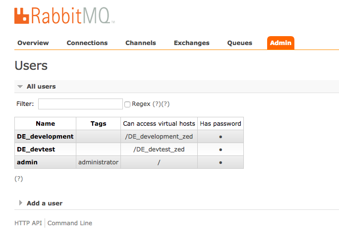
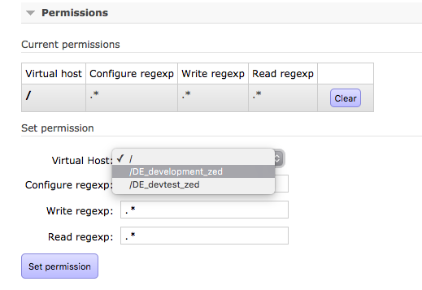
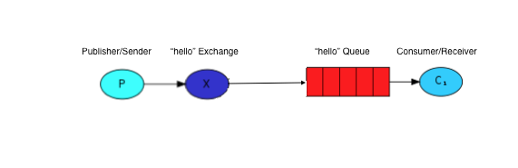
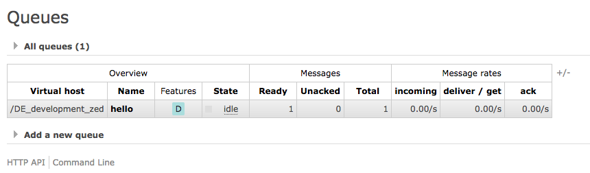
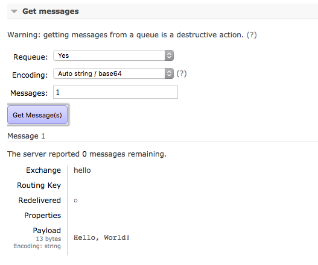
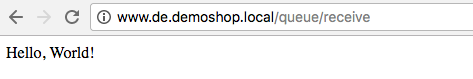
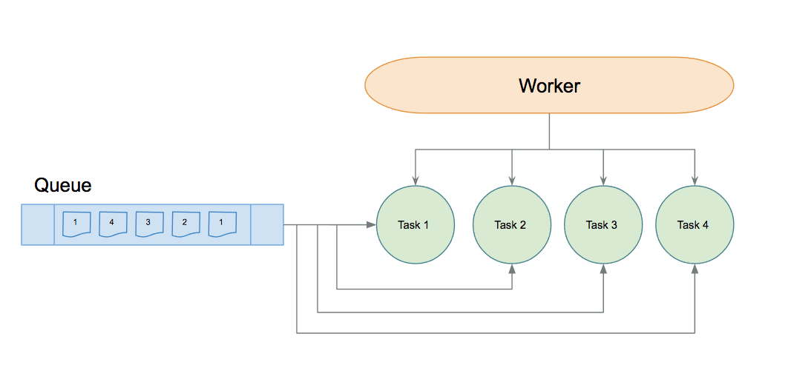

Tutorial - Set Up a "Hello World" Queue
This Tutorial demonstrates a simple Hello, World queue use case. We will create a hello queue and send/receive our messages to/from this queue with Hello, World content.
For this purpose, we will be using our default queue engine RabbitMQ.
Preparation
Before you begin, check to see that the management UI and the RabbitMQ adapter are installed and working:
RabbitMQ Management UI
The management UI is used for managing queues in the RabbitMQ UI therefore, we need to add Admin permissions:
To add Admin permissions:
- Go to the RabbitMQ management UI: http://zed.de.demoshop.local:15672/ and login.
- Go to the Admin tab and select admin from user table under All users.
- From Virtual Host select /DE_development_zed (for other stores it might be different).
- Click Set permission.
- You will now see the new permission in the table.


If you are working with different virtual hosts, you need to add them as well.
RabbitMQ Adapter
The Queue module needs at least one queue adapter.
To check if the RabbitMQ adapter is already registered in the Queue module:
In the Demoshop, open QueueDependencyProvider.php and check/add the RabbitMQ adapter inside createQueueAdapters():
Example:
<?php
namespace Pyz\Client\Queue;
class QueueDependencyProvider extends BaseQueueDependencyProvider
{
protected function createQueueAdapters(Container $container)
{
return [
$container->getLocator()->rabbitMq()->client()->createQueueAdapter(),
];
}
}
?>
Creating a Simple Queue
Before sending our messages to the hello queue, we need to first configure the Queue Adapter and then add queue configuration to RabbitMQ.
Default Queue Adapter You can skip this part if you want to use the default queue adapter: $config[QueueConstants::QUEUE_ADAPTER_CONFIGURATION_DEFAULT]
Defining the Queue Adapter
As mentioned, we can have different queue adapters for different queues, in this example we will configure our hello queue to work with the RabbitMQ adapter.
To configure a queue work with a queue adapter, add the following lines to config_default.php:
<?php
use Spryker\Shared\Queue\QueueConfig;
...
$config[QueueConstants::QUEUE_ADAPTER_CONFIGURATION] = [
'hello' => [
QueueConfig::CONFIG_QUEUE_ADAPTER => \Spryker\Client\RabbitMq\Model\RabbitMqAdapter::class,
],
];
...
?>
Adding Queue Configuration to RabbitMQ
The next step is to extend RabbitMqConfig.php in our project and then pass our configuration to getQueueOptions():
<?php
namespace Pyz\Client\RabbitMq;
use Generated\Shared\Transfer\RabbitMqOptionTransfer;
use Spryker\Client\RabbitMq\Model\Connection\Connection;
use Spryker\Client\RabbitMq\RabbitMqConfig as SprykerRabbitMqConfig;
class RabbitMqConfig extends SprykerRabbitMqConfig
{
/**
* @return \ArrayObject
*/
protected function getQueueOptions()
{
$queueOptionCollection = new ArrayObject();
...
$queueOptionCollection->append($this->createQueueOption('hello', 'hello.error'));
return $queueOptionCollection;
}
?>
Exchange
Exchanges and why do I need them? The best practice for working with Rabbit MQ requires to not create queues directly in RabbitMQ but to use a gateway which binds to the queues. Gateways in RabbitMQ are called Exchanges.
The following image shows how the RabbitMQ exchange and queue work together. You can find more information about Exchange and Routing at: https://www.rabbitmq.com/tutorials/tutorial-four-php.html.

Queue creation
Our queue configuration is ready, once we send our first message the queue will be created.
Sending Messages
We are almost done with all queue preparation and configuration, it’s time to see some actions. Here we want to send one message to our queue and check if this message is there.
Using clients
We assume that you already know how to use a client in the Controller classes, but you can also check our other tutorials or the Demoshop codebase
To send a message to a queue:
Place a trigger to the queue API by creating a simple controller/action in the Demoshop.
This code creates a QueueSendMessageTransfer and sets Hello, World into the body of message.
The final step is to call QueueClient::sendMessage() and the trigger will be set.
<?php
namespace Pyz\Yves\Application\Controller;
use Generated\Shared\Transfer\QueueSendMessageTransfer;
use Spryker\Yves\Kernel\Controller\AbstractController;
class QueueController extends AbstractController
{
public function sendAction()
{
$queueSendTransfer = new QueueSendMessageTransfer();
$queueSendTransfer->setBody('Hello, World!');
$queueClient = $this->getFactory()->getQueueClient();
$queueClient->sendMessage('hello', $queueSendTransfer);
return [
'success' => true
];
}
}
?>
Next, we call the action.
To call an action:
- Open a browser and call the following url http://www.de.demoshop.local/queue/send.
- Check the RabbitMQ management UI http://zed.de.project.local:15672/#/queues to see if the hello queue is created and there is a message in there.


Result: You successfully created the hello queue and sent one message with Hello, World! inside.
Receiving Messages
To receive messages, you need to create another action for receiving messages from the hello queue. To create another action for receiving a message from the hello queue:
<?php
public function receiveAction()
{
$queueClient = $this->getFactory()->getQueueClient();
$queueReceiveMessageTransfer = $queueClient->receiveMessage('hello', $this->createReceiverOption());
return [
'message' => $queueReceiveMessageTransfer->getQueueMessage()->getBody(),
'success' => true
];
}
/**
* @return array
*/
protected function createReceiverOption()
{
$rabbitmqReceiveOptionTransfer = new RabbitMqConsumerOptionTransfer();
$rabbitmqReceiveOptionTransfer->setNoAck(false); /* it prevents the queue to delete the message until we send the `acknowledging` */
return [
'rabbitmq' => $rabbitmqReceiveOptionTransfer
];
}
?>
Now, open a browser and call the following url http://www.de.demoshop.local/queue/receive.
Result: you should be able to see this:

Advanced Topics
Until now we demonstrated working with a simple queue and performing simple send receive actions on it. However, these actions can be automated to help developers focus on business logic. To automate the queue you can use Spryker’s Task and Worker to provide flexibility and freedom when managing queues. This chapter includes three parts. Parts one and two demonstrate Task and Plugin which bind together and in third part we will describe background processes and task management.
Running a Queue Task
The Queue module provides a specific commands for listening to queues, fetching messages and triggering registered processors. Running this command allows you to see what messages the queue is going to consume and pass to the plugins. The command syntax is:
/vendor/bin/console queue:task:start <queue-name>
Let’s run this command for hello queue and see what happens:
./vendor/bin/console queue:task:start hello
Store: DE | Environment: development
...MissingQueuePluginException - Exception: There is no message processor plugin registered for this queue: hello, you can fix this error by adding it in QueueDependencyProvider
...
The command triggered an error message, this happened because we did not register our Plugin for the hello queue. In the next step, we will fix this.
Queue Message Processor Plugin
Plugins in queue are used to give more focus on message processing to developers by hiding the queue implementation.
We will start by writing a simple plugin which will write a Hello, World! message to output:
<?php
namespace Pyz\Zed\Application\Communication\Plugin;
use Spryker\Zed\Queue\Dependency\Plugin\QueueMessageProcessorPluginInterface;
class HelloQueueMessageProcessorPlugin implements QueueMessageProcessorPluginInterface
{
public function processMessages(array $queueMessageTransfers)
{
foreach ($queueMessageTransfers as $queueMessageTransfer) {
try {
/* Sample Code */
echo sprintf("[x] %s \r\n", $queueMessageTransfer->getQueueMessage()->getBody());
$queueMessageTransfer->setAcknowledge(true); /* we acknowledge the message to remove it from the queue */
} catch (\Exception $e) {
$queueMessageTransfer->setHasError(true); /* we mark the message as an error, it will call errorHandling() for provided queue adapter on this message */
}
}
return $queueMessageTransfers;
}
public function getChunkSize()
{
/* Sample Chunk Size */
return 10;
}
}
?>
Now, register the plugin to QueueDependencyProvider::getProcessorMessagePlugins():
<?php
namespace Pyz\Zed\Queue;
use Pyz\Zed\Application\Communication\Plugin\HelloQueueMessageProcessorPlugin;
use Spryker\Zed\Kernel\Container;
use Spryker\Zed\Queue\QueueDependencyProvider as SprykerQueueDependencyProvider;
class QueueDependencyProvider extends SprykerQueueDependencyProvider
{
protected function getProcessorMessagePlugins(Container $container)
{
return [
'hello' => new HelloQueueMessageProcessorPlugin()
];
}
}
?>
Default Queue Consumer: You can skip this part if you want to use the default queue consumer: QueueConstants::QUEUE_DEFAULT_RECEIVER
and provide basic configuration for listening to the hello queue:
<?php
namespace Pyz\Zed\Queue;
use Generated\Shared\Transfer\RabbitMqConsumerOptionTransfer;
use Spryker\Zed\Queue\QueueConfig as SprykerQueueConfig;
class QueueConfig extends SprykerQueueConfig
{
protected function getQueueReceiverOptions()
{
return [
'hello' => [
'rabbitmq' => $this->getRabbitMQReceiverOption()
]
];
}
protected function getRabbitMQReceiverOption()
{
$queueOptionTransfer = new RabbitMqConsumerOptionTransfer();
$queueOptionTransfer->setConsumerExclusive(false);
$queueOptionTransfer->setNoWait(false);
return $queueOptionTransfer;
}
}
?>
Now when we run this command again the queue task will run:
./vendor/bin/console queue:task:start hello
Store: DE | Environment: development
[x] Hello, World!Queue Workers
A queue Worker is another useful command that brings the Task to a background process and provides parallel processing. By adjusting the Worker config we can run tasks with different time slot and different amount of processes.

Lets start Worker for our hello queue, first we need to adjust worker config in config_default.php:
<?php
$config[QueueConstants::QUEUE_WORKER_INTERVAL_MILLISECONDS] = 1000; /* Deley between each execution */
$config[QueueConstants::QUEUE_WORKER_MAX_THRESHOLD_SECONDS] = 59; /* Total execution time */
$config[QueueConstants::QUEUE_ADAPTER_CONFIGURATION] = [
'hello' => [
QueueConfig::CONFIG_QUEUE_ADAPTER => \Spryker\Client\RabbitMq\Model\RabbitMqAdapter::class,
QueueConfig::CONFIG_MAX_WORKER_NUMBER => 2 /* we want to have 2 processor for hello queue */
],
];
?>
In the example above, we adjusted our config to let the worker run for 1 minute and execute 2 hello task processes every 1 second. We can scale-up this in production by adding more and more processors, but we always need to keep in mind resources and limitations.
Now run:
./vendor/bin/console queue:worker:start -vvv
Store: DE | Environment: development
01) New: 2 Busy: 0 [hello]
Main Queue Process <execution round #1>: 59/59 sec [============================] 100%%
To run the worker command every minute, enable the command in jobs.php:
<?php
$jobs[] = [
'name' => 'queue-worker-start',
'command' => '$PHP_BIN vendor/bin/console queue:worker:start -vvv',
'schedule' => '* * * * *',
'enable' => true,
'run_on_non_production' => true,
'stores' => $allStores,
];
?>
See also:
Last review date: Oct. 18th, 2017